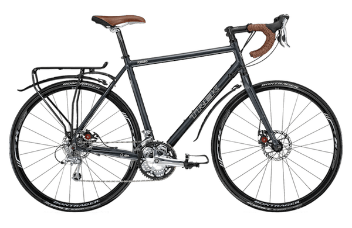
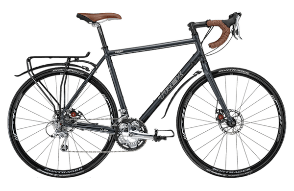

Triathlon Bikes are some of the flashiest road bikes available on the market. Triathlon bikes are specially designed to be optimal for the second (cycling) stage of a triathlon. Their aerodynamic riding position places the rider in an optimal position for resting and biking at the same time while providing the best aerodynamics for the rider. Triathlon bikes are not as well suited for traditional road races as they provide significantly less control than traditional road racing bikes, a nessesity in most road races.
The traditional road racing bike provides optimal control, light weight, and versatility. Road racing bikes are designed to put speed and control before all else, often sacraficing comfort and feel to achieve this goal. If you plan to compete in road bike races, or are looking for a great way to get a work out, a traditional road racing bike could be a perfect fit for you.
Touring bikes are a category of their own, they are drastically different than road and triathlon bikes as they strive to achieve a good balance of speed, versatility, comfort, feel, and durability. In a nutshell, touring bikes are designed to be ridden long distances so much of the focus of many bikes is on the comfort and durability so as to allow riders to persist in rough conditions and for long periods of time.

 
